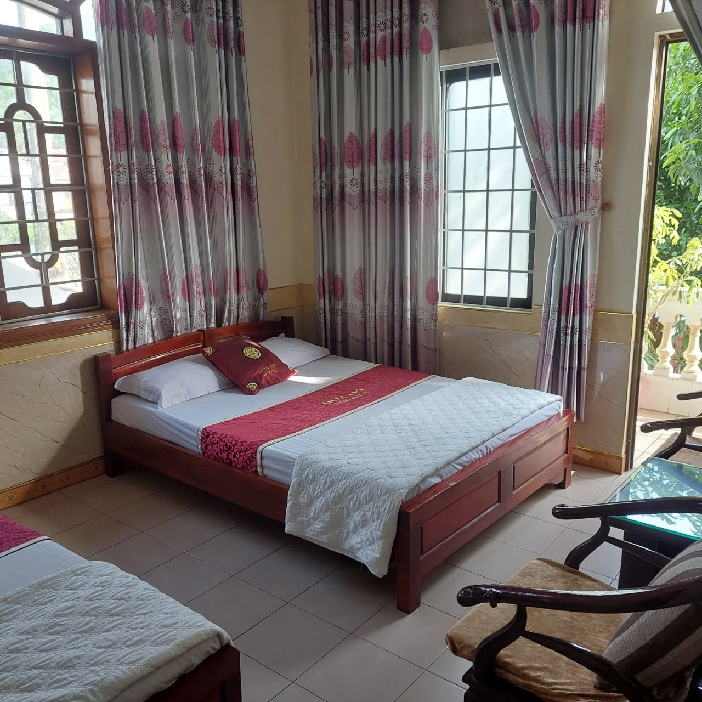

Nhắc đến Nghi Xuân, Hà Tĩnh, không thể không nhắc đến Nguyễn Du — đại thi hào dân tộc, danh nhân văn hóa thế giới, tác giả của kiệt tác "Truyện Kiều" bất hủ. Khu lưu niệm mang tên ông tại xã Tiên Điền là điểm đến văn hóa giàu ý nghĩa, chỉ cách Khách Sạn Hoa Đô vài phút di chuyển, rất phù hợp cho những ai yêu thích tìm hiểu văn học và lịch sử dân tộc.
Không gian lưu giữ ký ức một dòng họ khoa bảng
Khu lưu niệm được xây dựng trên chính quê hương dòng họ Nguyễn Tiên Điền — một dòng họ khoa bảng nổi tiếng xứ Nghệ với nhiều đời đỗ đạt, làm quan. Nơi đây lưu giữ nhà thờ họ Nguyễn, nhà tư văn, đàn tế Kỳ Phúc cùng nhiều hiện vật, thư tịch quý giá liên quan đến cuộc đời và sự nghiệp của Nguyễn Du. Không gian khu di tích mang đậm kiến trúc làng quê Việt truyền thống, với những hàng cây cổ thụ rợp bóng, ao sen và mái ngói rêu phong tạo cảm giác hoài niệm, tĩnh lặng.
Nơi khơi nguồn kiệt tác Truyện Kiều
Đến đây, du khách không chỉ được chiêm ngưỡng không gian di tích mà còn có cơ hội tìm hiểu sâu hơn về cuộc đời nhiều thăng trầm của Nguyễn Du, bối cảnh ra đời của Truyện Kiều — tác phẩm được xem là đỉnh cao của văn học chữ Nôm, đã được dịch ra hàng chục thứ tiếng trên thế giới. Khu nhà trưng bày còn giới thiệu nhiều hiện vật, tranh minh họa và các bản Kiều cổ quý hiếm, mang đến trải nghiệm giáo dục sâu sắc cho cả người lớn lẫn học sinh, sinh viên.
Điểm đến cho người yêu văn hóa, lịch sử
Không gian yên tĩnh, gần gũi thiên nhiên của khu lưu niệm là nơi lý tưởng để tạm rời xa nhịp sống hối hả, lắng lòng suy ngẫm về những giá trị văn chương, đạo lý mà Nguyễn Du gửi gắm qua từng câu Kiều. Đây cũng là điểm đến quen thuộc của các đoàn học sinh, sinh viên, những người yêu văn học đến từ khắp mọi miền đất nước.

Kinh nghiệm tham quan
- 🕐 Nên đi vào buổi sáng, thời tiết mát mẻ, thuận tiện tham quan và chụp ảnh.
- 📖 Tìm hiểu trước một vài trích đoạn Truyện Kiều sẽ giúp chuyến tham quan thêm phần thú vị.
- 🎓 Rất phù hợp cho các đoàn học sinh, sinh viên tham quan học tập ngoại khóa.
- 🚗 Đường đi thuận tiện, cách trung tâm thị trấn Xuân An không xa.
Nghỉ ngơi thuận tiện tại Khách Sạn Hoa Đô
Chỉ cách Khu lưu niệm Nguyễn Du vài phút di chuyển, Khách Sạn Hoa Đô là nơi dừng chân lý tưởng cho hành trình tìm về cội nguồn văn hóa xứ Nghệ - Tĩnh. Phòng nghỉ sạch sẽ, giá bình dân, nhân viên nhiệt tình hỗ trợ tư vấn lịch trình tham quan.
Liên Hệ Đặt Phòng Ngay